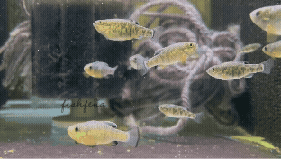

San Salvador Island Cyprinodon pupfishes show dramatic craniofacial divergence despite low genome‑wide differentiation. This allow for pinpointing regulatory changes underlying big phenotypic shifts.
Distinct oral jaw, pharyngeal, and sensory morphologies and feeding ecologies (generalists, molluscivores, and scale‑eaters) provide strong, quantifiable traits that are ideal for multiomics studies, and morphological and functional assays. Combining multiplexed in-situ HCR, antibody and live staining, CRISPR-Cas9, and reporter lines to test candidate genes and regulatory elements driving craniofacial development in vivo, my research will test how naturally-evolved genetic variation drive dramatic craniofacial phenotypic changes that parallel human craniofacial syndromes.
Craniofacial modules implicated in pupfish morphological evolution intersect with pathways relevant to human craniofacial disorders, offering a complementary vertebrate model for discovery novel "adaptive" versions of regulatory changes, protein functions and developmental pathways.
← Back to Home